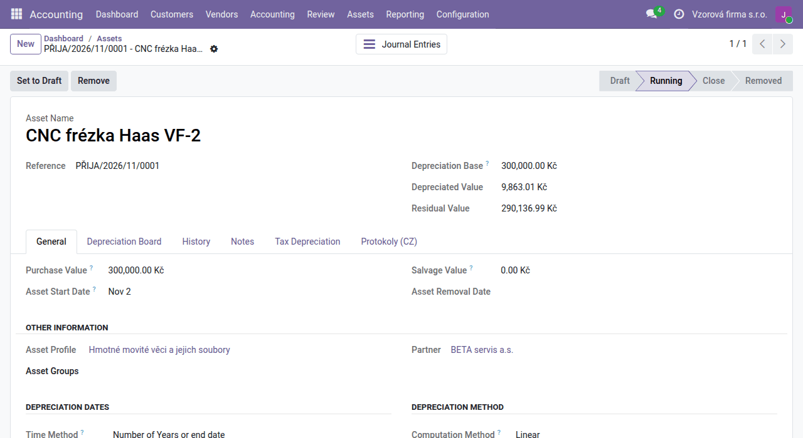
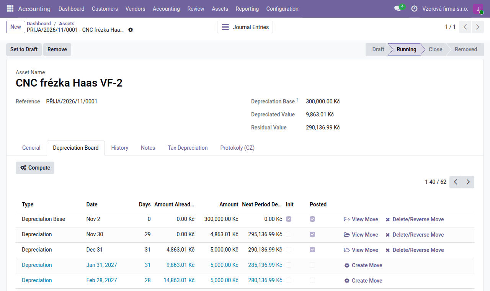
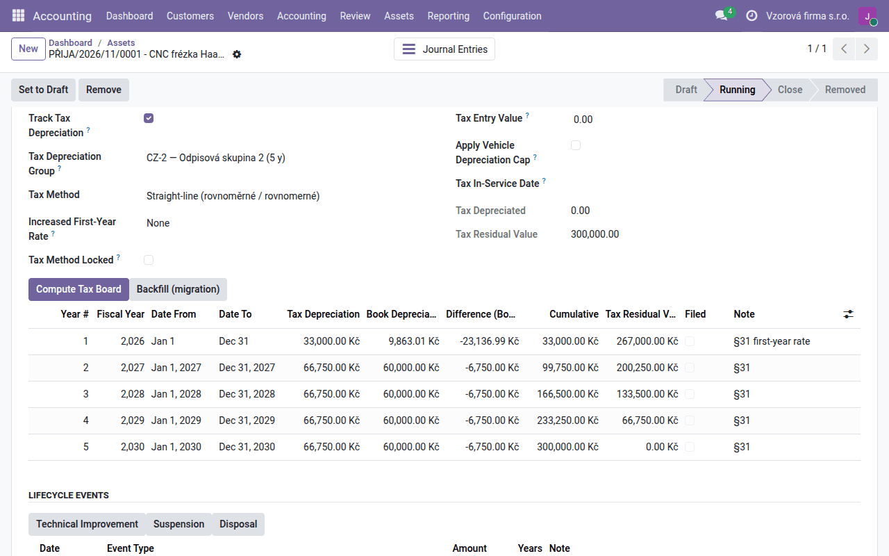

Task guide
Fixed assets and depreciation
A fixed asset from the vendor bill to its disposal — asset profiles, the accounting depreciation plan and its monthly entries, Czech tax depreciation groups, the year-end comparison and the commissioning and disposal protocols.
| Country | Czech Republic |
|---|---|
| Edition | Odoo Community |
| Covers | account_asset_management, l10n_cz_account_asset_profile, account_asset_tax, account_asset_tax_oca, l10n_cz_account_asset_tax, l10n_cz_asset_protocol_base, l10n_cz_asset_protocol_oca, l10n_cz_vat_return |
What this guide is for
Odoo keeps two depreciation plans for every fixed asset, as Czech law does: the accounting one (účetní odpisy), which is posted, and the tax one (daňové odpisy), which is only computed and compared. This guide follows one asset through both: from the vendor bill through putting into use and the monthly entries to the year end and the disposal.
Everything is in Accounting → Assets, Accounting → Reporting and Accounting → Configuration. The terms are explained in Odoo for a Czech accountant.
Asset profiles
Every asset has an asset profile: it says which accounts the asset and its depreciation use and over how long it is depreciated. The Czech localization creates ten of them, one per depreciable asset account (Accounting → Configuration → Assets → Asset Profiles):
| Profile | Asset account | Accumulated depreciation | Years |
|---|---|---|---|
| Software | 013000 | 073000 | 3 |
| Stavby | 021000 | 081000 | 30 |
| Hmotné movité věci a jejich soubory | 022000 | 082000 | 5 |
| … and seven more | 012–029 | 072–089 | 5 to 10 |
All of them post depreciation to 551000, straight-line, one entry a month,
with the first period in proportion to the days the asset was held
(Prorata Temporis). The useful lives are defaults, not law: before the
first asset, set them to your odpisový plán, and add profiles of your own
where one account holds assets with different lives. The full list and what
each setting means is in
l10n_cz_account_asset_profile.
From the bill to the asset
On the vendor bill (Accounting → Vendors → Bills), pick the Asset Profile on the line of the asset. The line's account changes to the profile's asset account, and confirming the bill creates the asset as a Draft. For the tax, pick the Majetek twin (21% G Majetek), so that the base is also reported on row 47 of the VAT return (Setting up account assignment).
Posting of a machine for 300,000 Kč at 21 % VAT:
| Account | Debit | Credit |
|---|---|---|
| 022000 Tangible movable assets | 300,000 | |
| 343121 VAT basic rate input | 63,000 | |
| 321000 Suppliers | 363,000 |
The bill goes straight to the asset account. If you collect the acquisition cost on 042 first — several invoices, transport, installation — post those bills to 042000 without a profile, and on the day the asset is put into use post an internal document 022000 / 042000 with the Asset Profile on its 022000 line: the asset is created from that entry the same way.
An asset can also be entered by hand, in Accounting → Assets → Assets → New — for assets taken over from a previous system, for example.
Putting the asset into use
Open the draft asset in Accounting → Assets → Assets:
- Check the Purchase Value, the Asset Start Date (the day depreciation starts — to depreciate whole months, set it to the first day of a month) and the Number of Years; they come from the bill and the profile and can be changed on the draft.
- On the tab Protokoly (CZ) fill in the Inventory number, the Location and the Responsible person.
- Click Confirm Asset. The asset is Running and the tab Depreciation Board shows the plan: one line a month.

The gear menu ⚙ → Print → Protokol o zařazení majetku gives the commissioning protocol with
the inventory number, the valuation, the depreciation plan and the signature
lines an accounting document needs
(l10n_cz_asset_protocol_base).
Monthly depreciation
Accounting → Assets → Compute Assets: enter the Date up to which to depreciate (the last day of the month) and click Compute. Odoo posts every plan line of every running asset dated up to that day and not yet posted; run it once a month, or once at the year end.

Posting (the machine above, put into use on 2 November, five years):
| Document | Account | Debit | Credit |
|---|---|---|---|
| Depreciation for November (29 days) | 551000 Amortisation of intangible and tangible fixed assets | 4,863.01 | |
| 082000 accumulated depreciation | 4,863.01 | ||
| Depreciation for December | 551000 | 5,000.00 | |
| 082000 | 5,000.00 |
A full month is 300,000 / 60 = 5,000 Kč; the first one is in proportion to its days. On the board, Create Move on a single line posts just that line, and Delete/Reverse Move takes a posted one back.
Tax depreciation
Tax depreciation follows the six odpisové skupiny of the Income Taxes Act and is never posted. On the asset, tab Tax Depreciation:
- Tick Track Tax Depreciation.
- Choose the Tax Depreciation Group (CZ-1 to CZ-6). Which group an asset belongs to follows from what it is (annex 1 to the act), not from its account — it is your decision.
- Choose the Tax Method: straight-line (rovnoměrné), accelerated (zrychlené) or, for emission-free vehicles in group 2, extraordinary (§ 30a). It cannot be changed once the first year is filed.
- Check the Tax Entry Value — filled from the purchase value; change it where the tax entry price differs — and click Compute Tax Board.

The board has one line a year, with the accounting depreciation of the same year and the difference next to it. For the machine above in group 2, straight-line:
| Year | Tax depreciation | Rate | Accounting depreciation |
|---|---|---|---|
| 2026 | 33,000 | 11 % | 9,863.01 |
| 2027 to 2030 | 66,750 a year | 22.25 % | 60,000 a year |
The first year gets the full first-year rate whatever the month the asset was
put into use. The buttons Technical Improvement, Suspension and
Disposal record what changes the board later; the rates, the increased
first-year rates and every rule of the computation are in
account_asset_tax and
l10n_cz_account_asset_tax.
If all assets of a profile fall into one group, set the group once on the profile (block Tax Depreciation Defaults) and new assets take it over. For assets whose tax depreciation began before Odoo, use Backfill (migration).
At the year end
- Compare the two plans. Accounting → Reporting → Accounting vs Tax
Depreciation, the year and Compute: per asset the accounting and the
tax depreciation, the amount to add back or deduct in the income-tax return
(ř. 50 when accounting depreciation is higher, ř. 150 when tax depreciation
is) and the deferred tax. Post Deferred Tax (draft) prepares the entry
481 / 592; it needs the deferred-tax journal and accounts on the company
form (
account_asset_tax). - Print the register. Accounting → Reporting → Tax Depreciation Register, the year and Print register: the assets by depreciation group with the year's depreciation and residual values.
- Close the tax year. Once the income-tax return is filed, Accounting → Configuration → Close Tax Depreciation Year and File Year. The board lines up to that year are frozen and the method of each asset is locked.
Disposal
- Post depreciation up to the month before the disposal (Monthly depreciation).
- On the asset click Remove. Enter the Asset Removal Date and choose the Removal Entry Policy: Residual Value writes the rest of the asset off to the Residual Value Account you pick (541000 for a sale, for example); Gain/Loss on Sale takes a Sale Value and posts the difference to the gain or loss account. No account is preset — choose them each time.
- Generate Removal entries. Odoo posts the depreciation up to the removal date and prepares the removal entry as a draft; check it and post it.
For a machine removed in mid-January with the Residual Value policy:
| Account | Debit | Credit |
|---|---|---|
| 082000 accumulated depreciation | 12,121.07 | |
| 541000 Residual value of intangible and tangible fixed assets sold | 287,878.93 | |
| 022000 Tangible movable assets | 300,000.00 |
The asset is Removed, and its tax board ends with half the annual depreciation in the year of disposal. Record the Disposal method and Disposal reason on the tab Protokoly (CZ) and print Protokol o vyřazení majetku from the gear menu. The sale itself is invoiced as usual, with revenue on 641000.
Month-end and year-end check
- Every asset bought in the period is Running, not Draft (filter the list in Accounting → Assets → Assets by status).
- Compute Assets was run to the last day of the period: the balance of 551000 for the month equals the plan.
- The balances of the 01x, 02x accounts equal the purchase values of the running assets, and those of 07x, 08x the Depreciated Value.